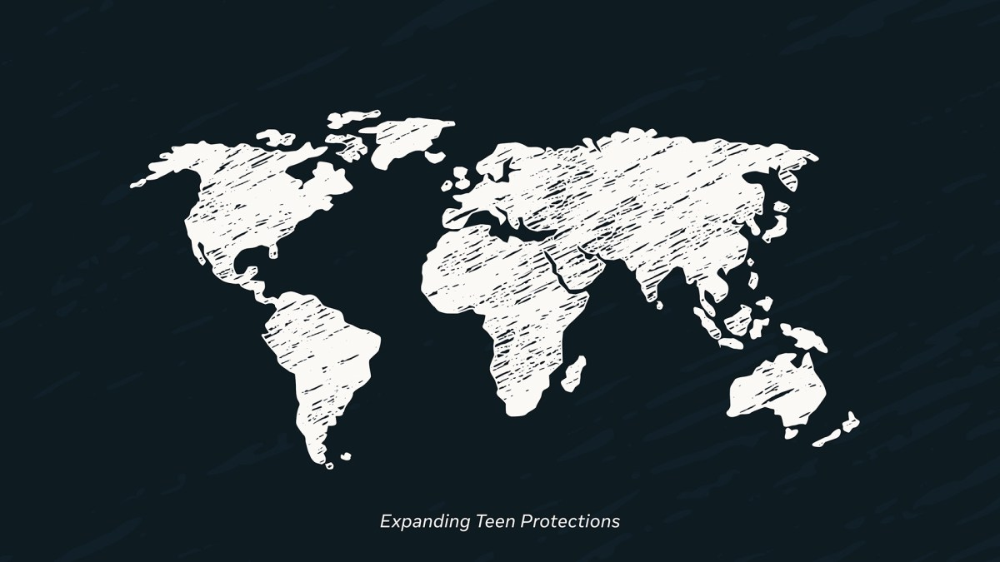
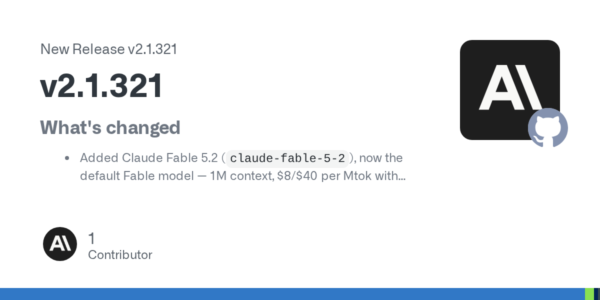
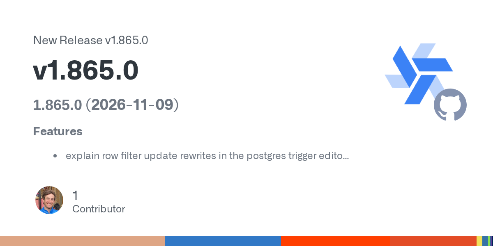
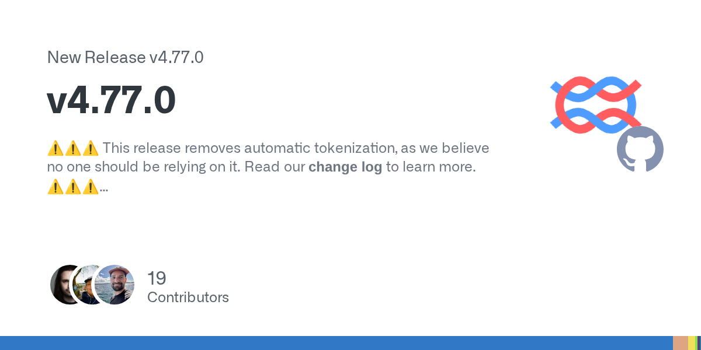
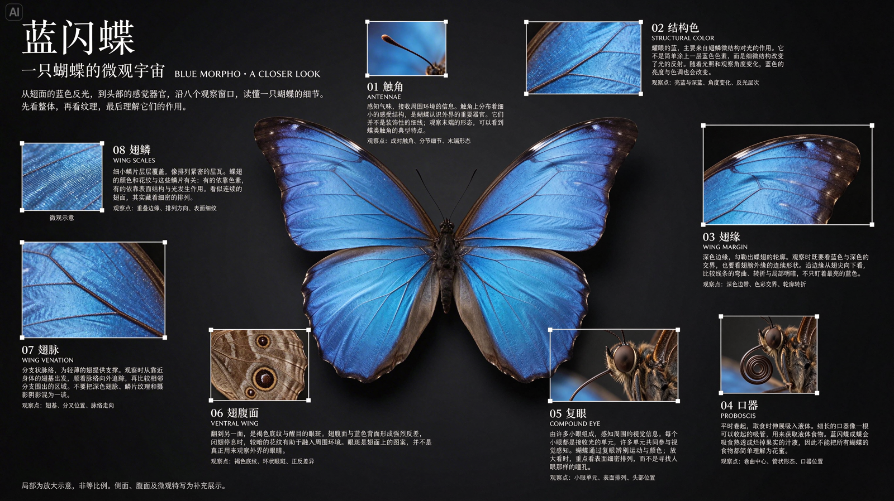
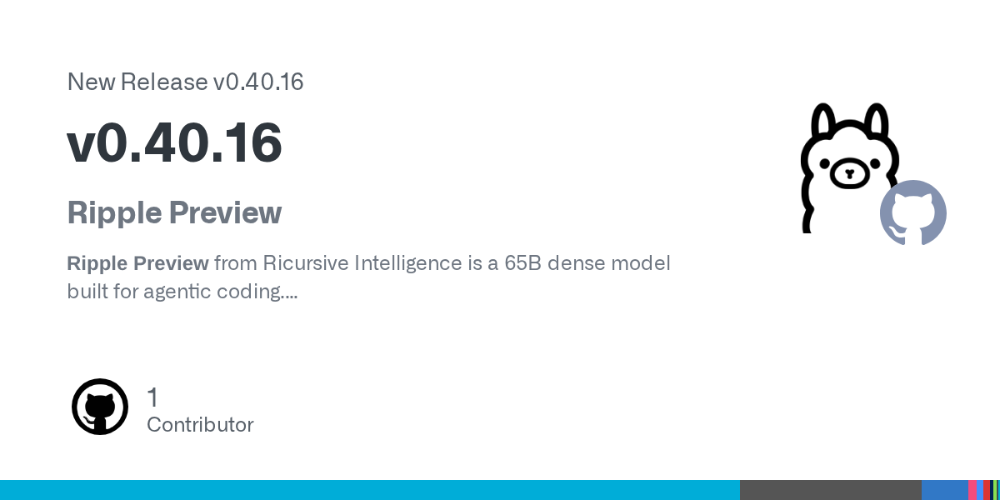
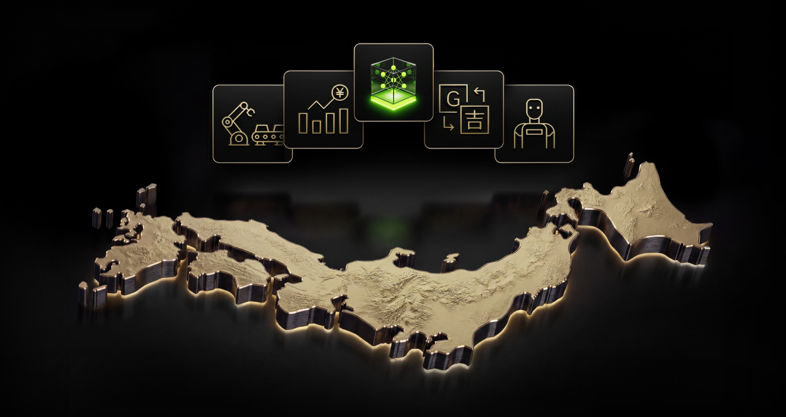
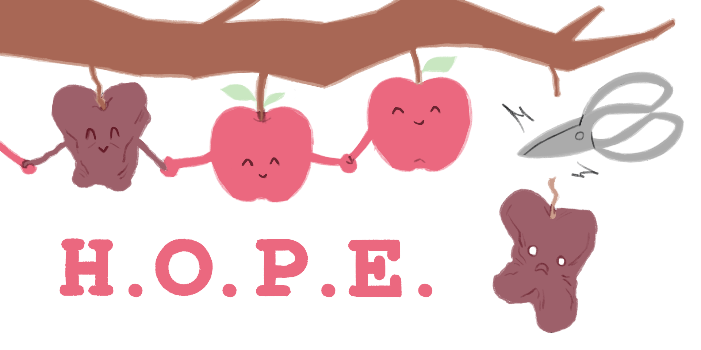
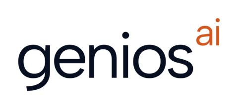
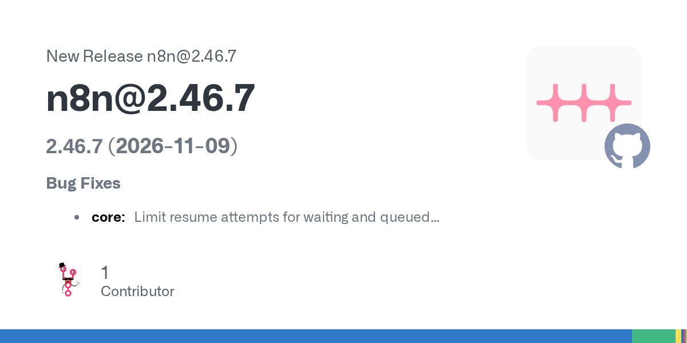

2026-11-10
VOL 406
读者，早。
Control Room回答另一件具体的事：研究任务出问题时，谁有权阻断下一次推理。公司披露的三十五秒从收到停止指令算起，部分故障关闭能力仍在扩展覆盖。制造业档案检索、合成金融人物与出版融资另行说明资料和服务如何积累；它们各有进展，不需要借一张模型排行榜来证明。

OpenAI宣布ChatGPT Enterprise上架AWS Marketplace，机构可通过既有AWS采购与账单关系购买、管理，符合资格的支出可计入AWS承诺消费。官方称模型、功能和更新节奏与直接采购相同；医疗及金融行业方案另须确认资格。这是采购渠道变化，不等于所有工作负载自动迁移到AWS，也不能据此假定所有合同支出都可抵扣。

Meta将Instagram的AI年龄估计扩展到全球，把疑似未成年、即使填写成年生日的账号纳入Teen Account保护。美国父母本月将收到说明通知；澳大利亚开始采用Apple自愿共享的年龄范围信号。Facebook仍在继续铺开相关技术，Threads计划年内全球推出相似机制。这些属于各平台不同阶段的安排，不能合写为当天全部完成；年龄推定也存在误判可能。

Claude Code v2.1.321修正MCP OAuth请求在服务器重定向时向其他主机携带刷新令牌等秘密的问题，并修补部分Bash只读命令、写文件路径与复制移动操作的权限判断。远程控制新增统一指定设置文件的入口；设置文件变动后须重启才会继续创建新会话。本条聚焦客户端维护，不能仅由修复公告断言已有用户凭据实际泄露。

Windmill v1.865.0支持原位重新加载专用工作节点，并逐个重启，增加按文件夹模式分配专用节点和复用同类型连接的触发器。维护项还包括设置变更对比遮蔽秘密、在令牌或用户消失时撤销MCP OAuth授权，以及脚本或流程改名后调整Azure触发器。这是调度、连接与维护行为更新，不代表滚动重启在所有部署中都能保证零中断。

Langfuse v4.77.0取消自动分词估算，不再根据请求内容推断观测的token用量，并引导用户补交缺失用量。版本同时加入Bedrock API key上游连接、为OpenAI和Anthropic连接配置自定义地址与额外请求头，以及若干追踪和费用记录改进。取消推算意味着未上报的用量可能继续缺失，不能将空白记录当作零消耗。

Anthropic推出Claude Fable 5.2与Mythos 5.2，同一底层模型采用不同访问与防护安排：Fable面向一般用户，Mythos的生物与网络研究能力须通过验证项目申请。标准价格为每百万输入tokens八美元、输出四十美元；可选快速模式为十六与八十美元，厂商称生成最高加速2.5倍。官方研究和工程案例属于特定配置下的公司自报。当天Claude Code版本已接入Fable 5.2并作为默认Fable模型，访问仍受产品与账号资格约束。

Meta发布Muse Ember，在Muse Code与Meta Model API以muse-ember-1.0提供，支持文本、图像、音频与视频理解。每百万输入tokens为0.10美元、缓存输入0.004美元、输出0.50美元；上下文一百万tokens，输出最高512K。公司公布的评测包含外部Artificial Analysis结果和内部测试；部分终端测试使用不同模型各自的框架，不能直接归因为纯模型差距。低价服务不等于开放权重，发布材料未在此宣布权重下载。

字节跳动Seed发布Seedream 5.5，强调连续编辑时保留未修改区域，展示同一图像连续一百轮修改，并支持含完整或部分透明度的原生RGBA素材。官方另称中英文测试中的严重文字损坏率为0.4%、轻微为1.7%；这些是厂商评估，不能保证任意提示或其他语言都达到同样结果。Pro版属于后续计划，公告本身没有给出可统一适用的公共API型号、费率与开放日期。

Ollama v0.40.16新增Ripple Preview运行入口，指向Ricursive Intelligence既有的65B稠密编码模型；这是当天运行时支持更新，基础模型较早公开，不能改写成新的基础模型首发。版本还称Qwen3.8 Flash Next在Apple芯片上少占约27GiB内存，并修正Responses接口在默认情况下静默截断输入的行为。内存数字属于指定模型与平台，不能推广到所有权重。

OpenAI披露Control Room，按任务ID集中管理研究基础设施的模型推理授权，停止指令抵达后最多三十五秒阻断进一步输出，延迟来自授权缓存。工作进程可能仍活着，停止的是后续模型推理，不能简称整个进程被杀掉。公司称系统已覆盖研究基础设施；服务失效时拒绝推理的故障关闭机制已覆盖前沿模型研究，其余研究工作负载将在随后几天完成铺开。它与风险监测协同，也不负责撤销已经发生的外部动作。

NVIDIA与Elith公开Nemotron-Personas-Finance-Japan，包含一百万条记录、每条九种人物描述，合计九百万份persona与五十个字段，覆盖家庭资产、金融知识、职业和人口背景。数据以官方统计与公开调查的分布为基础，并非真实客户记录，采用CC BY 4.0，可用于商业用途且须按许可署名。它适合构造客户对话与测试不同群体的体验，不能把合成分布当作实际个人或已观察到的真实消费行为。

Amazon团队当天首次发表HOPE技术分析，在MoE专家剪枝时纳入专家之间的成对协作关系，而非只给每位专家独立排序。方法先用校准数据记录激活与输出统计，再求解剪除集合，不需再训练，并可与量化结合。作者在三类模型、两种校准数据与多项测试中报告高剪枝比例下更明显的优势；逐层独立剪枝、跨层作用及更高阶关系仍有限制，不能解释为任意模型减半后都能保持效果。
OpenAI当天首次发表Kuken Industries与Recursive建设图纸检索的客户案例，基础系统并非当天才投入使用。工程师可用零件编号、图纸截图或PDF检索七十年档案，再结合现场规格和既往更换记录确认。Kuken预计全年检索工时可减少约90%，这是预期；另一个仍在原型测试的图纸检查工具，约90%的被标记问题属真实差异，是告警准确程度，不能写成发现了全部错误的90%。
Coframe宣布累计融资三千五百万美元，其中本轮A轮为二千五百万美元，由Khosla Ventures与Hanabi Capital共同领投。产品将生成、设计、开发与实验分析接在一起，持续测试网站和广告变体。公司自报客户转换率平均提升超过20%、实验胜出率39%；缺少本期独立复核与统一对照口径，不能视为所有网站采用后都能取得的增长。参与者包括科技公司个人负责人，公告不等于这些公司全都作为机构投资。
Spines公布六千四百万美元增长资金，由Zeev Ventures领投的二千九百万美元A-1股权轮，与Twelve提供的三千五百万美元非稀释增长融资额度组成。公司自报收入年化运行率达到五千万美元，不能当作已实现全年收入；超过八千位美国作者已使用平台。作者提供原稿，平台接编辑、设计、翻译、有声书及分发，也可选人工专业服务。融资额度不等于已全部到账，不稀释股份亦不等于没有资金成本。

geniosAI走出隐身期，宣布合计一千九百一十万美元种子及A轮融资；FactSet领投A轮，Zoom与General Catalyst参与。产品面向财务负责人和投资团队，连接金融数据、计算、假设与复核决定，主张让下一次分析沿用既有依据。公司称已在大型银行及科技企业团队中使用，尚未在公告披露足以独立验证的收入、留存或准确率，本轮总额也不是单一A轮金额。

n8n稳定维护线2.46.7为等待与排队执行设置恢复尝试上限，修复相应反复恢复行为。当天另有2.47.3分支更新，涉及迁移发现的归属权限与定时任务清理；它们是不同发布线，升级前须核对自己所在版本，本条工具入口指向2.46.7固定标签，不使用会继续移动的stable链接。